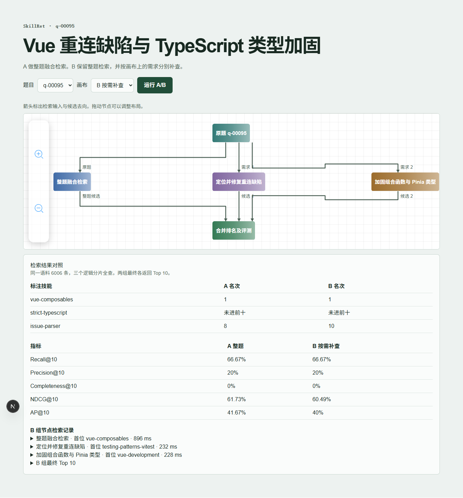

q-00095 Vue 重连缺陷与 TypeScript 类型加固
strict-typescript 在类型约束分支排第 6，超出该分支的合并名额。issue-parser 从第 8 后移至第 10，召回持平，NDCG 下降。
A/B 指标
| 指标 | A 整题 | B 按需求补查 |
|---|
| Recall@10 | 66.67% | 66.67% |
| Precision@10 | 20.00% | 20.00% |
| Completeness@10 | 0.00% | 0.00% |
| NDCG@10 | 61.73% | 60.49% |
| AP@10 | 41.67% | 40.00% |
数据集标注技能的名次
| 标注技能 | A | B |
|---|
| vue-composables | 1 | 1 |
| strict-typescript | 未进前十 | 未进前十 |
| issue-parser | 8 | 10 |
原题与 B 组各节点
整题融合检索
We have a GitHub issue (#347) on our internal `vue-dashboard` repo titled "Race condition in useWebSocket composable causes stale data on reconnect — intermittent TypeError: Cannot read properties of undefined (reading 'status') in production". The issue includes a full stack trace, reproduction steps mentioning rapid tab switching, and a code snippet of our current `useWebSocket` composable. I need you to parse out the actionable details from that issue, then rewrite the `useWebSocket` composable with proper fixes. The composable should use `shallowRef` for the socket instance, handle cleanup in `onScopeDispose`, and include a `withLoadingState` wrapper around the reconnection logic. For typing, make sure we're using `noUncheckedIndexedAccess`-safe patterns throughout — the message queue is a `Record<string, QueuedMessage[]>` and every indexed access needs to be guarded. Also use type-fest's `SetRequired` and `ReadonlyDeep` where appropriate for the config options type, and add `Simplify` for the return type so IntelliSense stays clean. The composable feeds into a Pinia store (`useNotificationStore`) that should also be refactored with the same strict typing discipline. Include the matching `eslint` rule config for `@typescript-eslint/no-unsafe-member-access` and `no-unnecessary-condition` so these patterns are enforced going forward, plus vitest unit tests for the reconnection edge case described in the issue.
- vue-composables
- vue-expert
- vue-development
- vue-best-practices
- typescript-strict-config
- vue
- reproduce-bug
- issue-parser
- vscode-extension-debugger
- TypeScript Strict Mode
定位并修复重连缺陷
Extract reproduction steps for a Vue useWebSocket reconnect race during rapid tab switching. Refactor the socket to shallowRef, clean it up with onScopeDispose, wrap reconnection in withLoadingState, and cover the edge case with Vitest.
- testing-patterns-vitest
- writing-test-using-vitest
- migrating-to-vitest-4
- vitest-testing
- typescript-testing
- front-end-testing
- vscode-extension-debugger
- testing-patterns
- vitest-3-features
- vitest-targeted-testing
加固组合函数与 Pinia 类型
Enforce noUncheckedIndexedAccess across a Vue composable and Pinia notification store. Guard indexed message queues, use type-fest SetRequired, ReadonlyDeep and Simplify, and configure ESLint rules for unsafe member access and unnecessary conditions.
- vue-development
- vue-expert
- vue-best-practices
- vue
- vue-composables
- strict-typescript
- typescript-strict-config
- cui-javascript-linting
- vue-pinia-best-practices
- eslint-detector
最终候选
A Top 10
- vue-composables
- vue-expert
- vue-development
- vue-best-practices
- typescript-strict-config
- vue
- reproduce-bug
- issue-parser
- vscode-extension-debugger
- TypeScript Strict Mode
B Top 10
- vue-composables
- vue-expert
- vue-development
- testing-patterns-vitest
- writing-test-using-vitest
- vue-best-practices
- vue
- typescript-strict-config
- reproduce-bug
- issue-parser
RSI 实测截图
